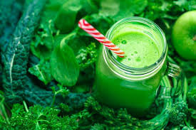

Chlorofil to barwnik występujący w roślinach zielonych, pełniący kluczową rolę w procesie fotosyntezy- bez względu na formę w której występuje – najsilniej absorbuje światło w czerwonej oraz fioletowej części widma, najsłabiej zaś w jego części zielonej.
Co ciekawe, struktura chlorofilu jest bardzo zbliżona do hemu, barwnika krwi. Cząsteczka hemoglobiny ma prawie taki sam kształt jak cząsteczka chlorofilu. Hemoglobina posiada w swoim centrum atom żelaza , natomiast chlorofil atom magnezu. W skład chlorofilu wchodzi 2,7% magnezu, który nadaje kolor liściom i igłom.
Najlepszymi źródłami chlorofilu są oczywiście zielone warzywa: szpinak, jarmuż, sałata, kapusta, rzeżucha, trawa pszeniczna i trawa jęczmienna, natka pietruszki czy koperek, a także zioła, np. pokrzywa, mniszek lekarski.
Najlepiej jest przyswajalny w formie płynnej dlatego najlepiej codziennie rano np.na śniadanie lub drugie śniadanie zrobić sobie koktajl że warzyw zielonych wzbogacając ulubionymi owocami.
Jeżeli nie lubimy lub nie mamy czasu w tym przypadku najlepszym rozwiązaniem będzie suplement w formie płynnej, który dodaje się do wody. Smakuje jak pyszny orzeźwiający napój bo jest z dodatkiem mięty.
Właściwości i działanie chlorofilu:
⬅️ znany jako silny przeciwutleniacz,
⬅️ oczyszcza przewód pokarmowy z toksyn i patogennej flory jelitowej, wspomaga rozwój korzystnej flory bakteryjnej jelit,
⬅️ wspomaga oczyszczanie krwi,
⬅️ pomaga utrzymywać równowagę kwasowo-zasadową naszego organizmu, przeciwdziała zakwaszeniu,
⬅️ pobudza proces utleniania i stymuluje regenerację komórek w organizmie,
⬅️ kontroluje problemy skórne poprzez eliminację wolnych rodników, wspomaga leczenie stanów zapalnych skóry,
unieszkodliwia toksyny (w tym aflatoksyny), dezaktywuje wiele karcynogenów,
⬅️ neutralizuje pierwiastki ciężkie w organizmie, szczególnie kadm (palacze!),
⬅️ pomaga oczyścić wątrobę i jelita, poprawia ich funkcjonowanie,
usuwa nieprzyjemny oddech i zapach ciała,
⬅️ przeciwdziała takim stanom zapalnym i owrzodzeniom błony śluzowej żołądka i jelit,
⬅️ wspomaga leczenie anemii,
uaktywnia enzymy do wytwarzania witamin E, A, i K,
⬅️ obniża zapotrzebowanie na insulinę przez co wspiera leczenie cukrzycy,
⬅️ wzmacnia układ naczyniowy,
⬅️ pomocny przy migrenie
⬅️ dodaje energii,
⬅️ stymuluje system immunologiczny organizmu, ma właściwości hamujące rozwój guzów,
⬅️ zatrzymuje wzrost grzybów Candida w przewodzie pokarmowym,
⬅️ wspomaga regulację ciśnienia krwi,
Cóż mogę dodać po takiej długiej liście prozdrowotnych właściwości chlorofilu. Mam nadzieje że zainteresowałam Was i sami odkryjecie cudowne działanie chlorofilu.
Osobiście piję koktajle zielone ale i suplementuje sie chlorofilem w formie płynnej Zaczynam dzień od 3 szklanek wody by nawodnić organizm. Woda zawsze jest ciepła 1 szklanka z świeżo wyciśniętym sokiem z cytryny bio,2 szklanka z szczyptą soli kłodawskiej i 3 szklanka z chlorofilem.
Nie ma przeciwskazań do picia chlorofilu, dzieci także moga go pić
Jeżeli chcecie się poradzić z jakiej firmy najlepiej stosować chlorofil to proszę napisać wiadomość chętnie odpowiem na pytania 🙂
